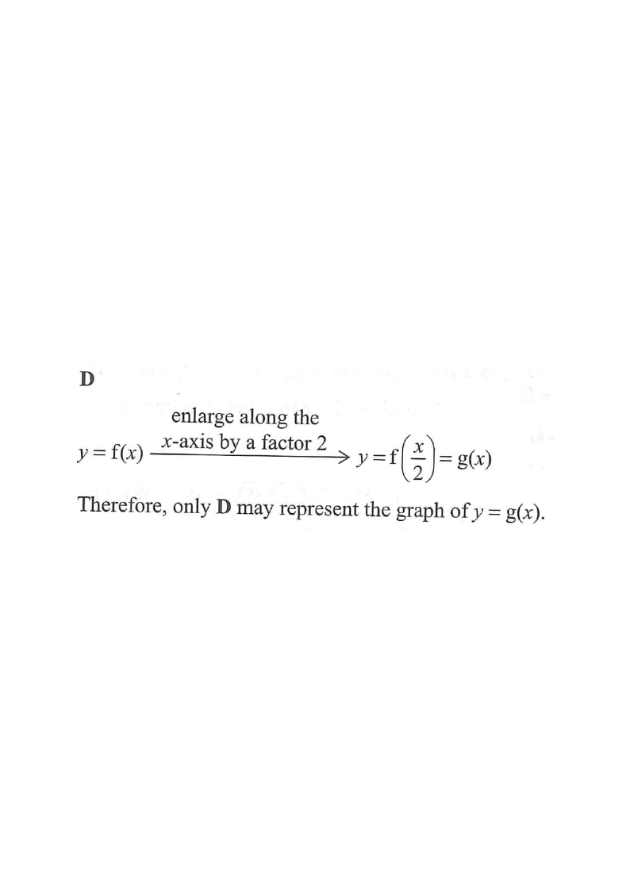

Step 1 — Given graph of $y=f(x)$: roots at $x=-12$ and $x=4$, $y$-intercept $10$.
The figure shows the graph of $y=f(x)$. The curve cuts the $x$-axis at $x=-12$ and $x=4$, and its $y$-intercept is $10$.
If $g(x)=f\!\left(\dfrac{x}{2}\right)$, which of the following may represent the graph of $y=g(x)$?

From $y=f(x)$: $f(-12)=0$, $f(4)=0$, $f(0)=10$.
The $x$-intercepts tell us the zeros of $f$; the $y$-intercept gives one known value of $f$.
Replacing $x$ by $x/2$ is a horizontal stretch by a factor of 2 about the $y$-axis (each point moves to double its horizontal distance from the $y$-axis).
Horizontal changes inside the bracket act opposite to intuition — dividing the input stretches the graph sideways.
$g(x)=0 \iff f\!\left(\dfrac{x}{2}\right)=0 \iff \dfrac{x}{2}=-12 \text{ or } 4$.
So $x=-24$ or $x=8$.
Every zero of $f$ doubles: $-12 \to -24$ and $4 \to 8$.
Put $x=0$: $g(0)=f\!\left(\dfrac{0}{2}\right)=f(0)=10$.
The point on the $y$-axis does not move, because $x=0$ satisfies $x/2=0$.
So $y=g(x)$ has $x$-intercepts $-24$ and $8$, and $y$-intercept $10$ — the same shape, twice as wide.
This matches option D.
Options A, B keep the old intercepts $-6,2$; option C moves the $y$-intercept to $5$ — all wrong.
Question. The graph of \(y=f(x)\) cuts the \(x\)-axis at \(x=-9\) and \(x=6\), and its \(y\)-intercept is \(12\). If \(g(x)=f\!\left(\dfrac{x}{3}\right)\), find the \(x\)-intercepts and the \(y\)-intercept of the graph of \(y=g(x)\).